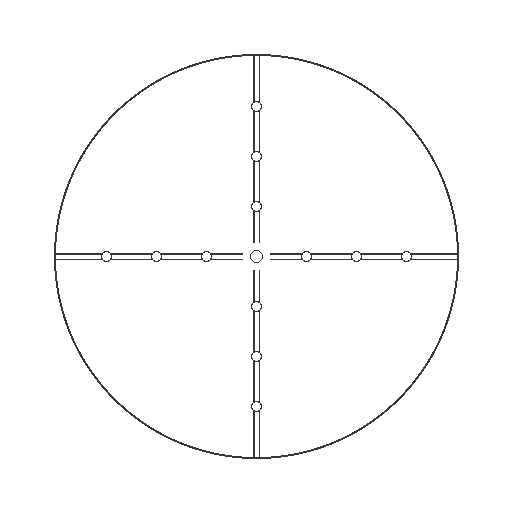

Sniper nest — the street is yours to watch.
PS4 controller — Right stick look · L2 Scope · L3 Zoom 2x/4x · X / R1 / R2 Shoot
Mouse — look · Right-mouse Scope · Click Shoot · Wheel Zoom · F Scope · Touch — drag look · SCOPE / FIRE / ZOOM